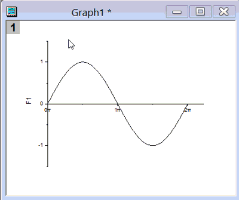
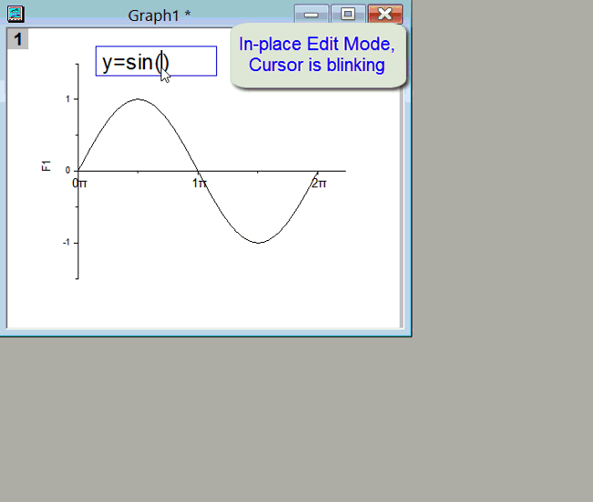
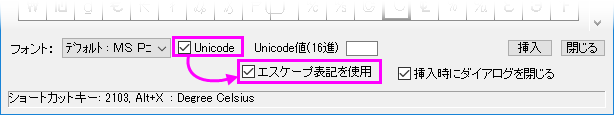
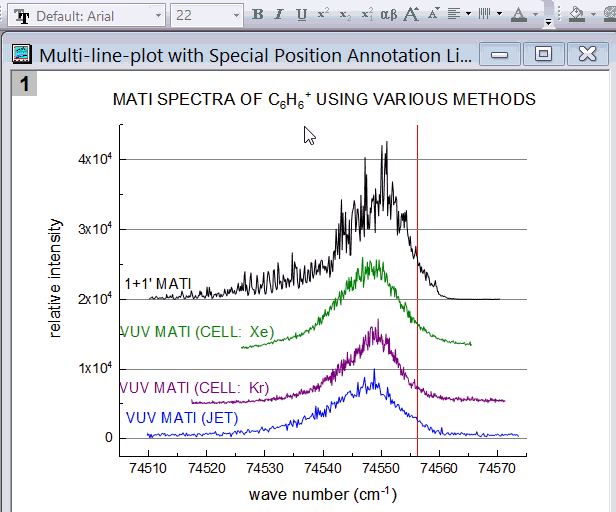

FAQ-148 テキストラベルに特殊文字を挿入する方法
Insert-Greek-Symbols-in-Label
最終更新日：2022/11/30
テキストラベルに特殊文字を挿入する2つの基本モードがあります。
- 新しいテキストオブジェクトを作成する際、多くのユーザはインプレース編集モード（テキストツール
 をクリック、もしくはショートカットメニューからテキストの追加を選択）で特殊文字を追加し、編集しています。
をクリック、もしくはショートカットメニューからテキストの追加を選択）で特殊文字を追加し、編集しています。
- 既存のテキストオブジェクトでは、テキストオブジェクトのプロパティダイアログで特殊文字の追加と編集することができます。
Origin 2018以降、Unicode文字に対応しています。
テキストラベルを作成するには、プロット操作・オブジェクト作成ツールバーのテキストツールボタンをクリックしてグラフやワークシート内のラベルを追加する位置でクリックします。するとインプレース編集モードになります。
- フォントを選択して4桁の１６進数Unicode文字番号（θなら03B8）を押してキーボードのALT+Xキーを押します。
- 
- 右クリックして、挿入：シンボルマップを選択します（2022b以降）。2018-2022バージョンでは、シンボルマップと選択します。新しいバージョンでは、ダイアログのタブの1つから文字を選択します。また、詳細シンボルマップダイアログ (古いバージョンではデフォルトで開く) を使用している場合は、必要に応じてフォントを設定し、Unicodeのチェックをオンにした状態で、文字を見つけて 挿入をクリックします。あるいは、4文字のUnicode文字番号をUnicode値(16進)に入力して挿入をクリックします。
- 
Note: Origin 2018より前のバージョンでは、OriginはUnicodeをサポートしていません。そのため、2018より前のバージョンを使用しているユーザとファイルを共有したい場合、Unicode 文字を入力するときに(1)詳細なシンボルマップ（キャラクターマップではない）を使用してUnicode文字を挿入、(2)ダイアログの下部にあるエスケープ表記を使用にチェックをつける必要があります。最後に、プロジェクトファイルをOPJUファイルではなく OPJとして保存します (Origin 2023以降のバージョンではOPJファイルとして保存できませんが、個々のウィンドウファイルをOGG、OGWなどにして共有することはできます)。
- 
|
Origin 2017以降、特殊文字に対応しています。
- インプレース編集モードで、太字、斜体などにするテキストをハイライト表示し、書式ツールバーのいずれかのボタンをクリックします。または、目的のボタンをクリックして、文字を入力します。
- 
- または、既存のテキストオブジェクトをクリックして選択し、右クリックしてプロパティを選択することもできます。テキストオブジェクトダイアログボックスが表示され、上部パネルを使用してテキストを編集したり、テキストを選択して編集ボックスの上にある書式ツールバーボタンをクリックしたりできます。
- テキストオブジェクト（プロパティ）ダイアログボックスの右側にあるシンボルマップボタンをクリックします。フォントを選択し、入力したい文字をクリックして挿入をクリックします。任意で、Unicodeのチェックを付けてUnicode値(16進)に4文字の16進数コードをボックスに入力します。入力されたシンボルを確認して挿入をクリックします。Unicodeボックスをオンにしても、Originは先行するエスケープ シーケンスを使用して文字を挿入し、以前のバージョンの Originと互換性があることに注意してください。
 | テキストオブジェクトダイアログのテキストページにはサーカムフレックスまたはキャレット (「^」) ボタンはありませんが、文字の上に「^」を追加することができます。
- 0302と入力する
- ALT+Xを押す
- キーボードの左矢印を押す
- ベースとなる文字を入力する
これは面倒なので、このような文字を多く作成する必要がある場合は、無料のLaTeX アプリをインストールすることを検討してください（アプリギャラリーでアプリの追加をクリックして「latex」を検索します）。
|
キーワード：Unicode, ALT+X, ギリシャ文字, ASCII, 拡張ASCII, ANSI, mu, ミュー, パイ, pi, デルタ, アルファ, データ, イプシロン, ラムダ, 度, 上付き, 下付き, 拡張文字, エスケープシーケンス, 上線, チルダ, ドット, キャレット, リッチテキスト, オングストローム, 数学, ウムラウト, diaeresis, acute, tilde, アクセント記号, macron, サーカムフレックス, Planck